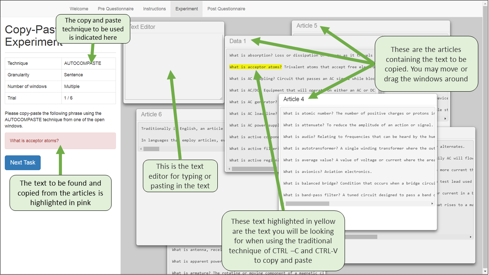
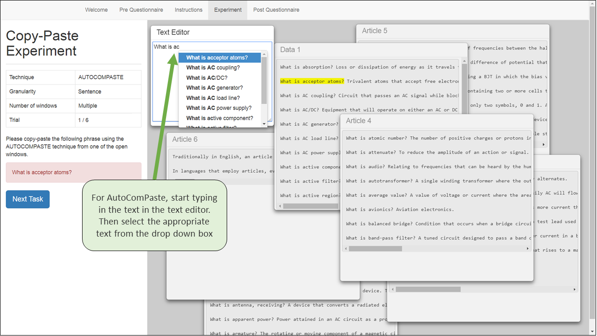
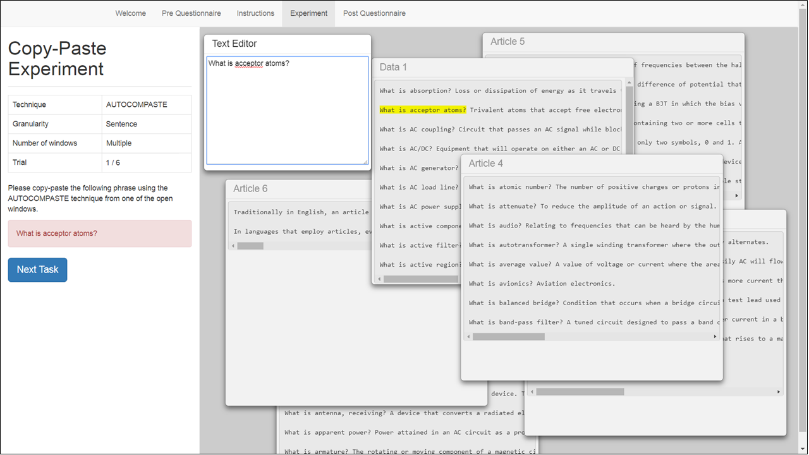
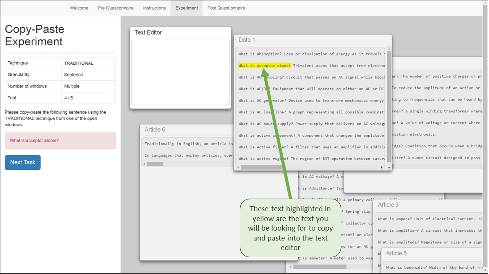
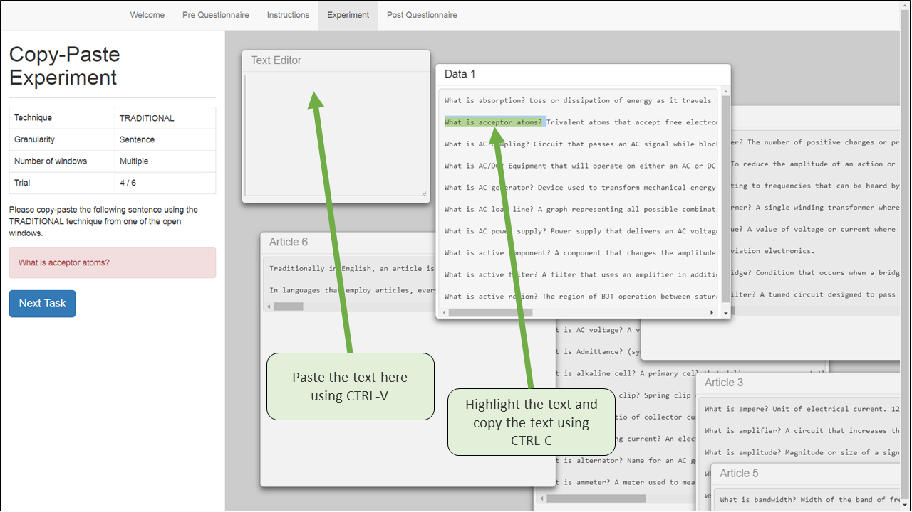
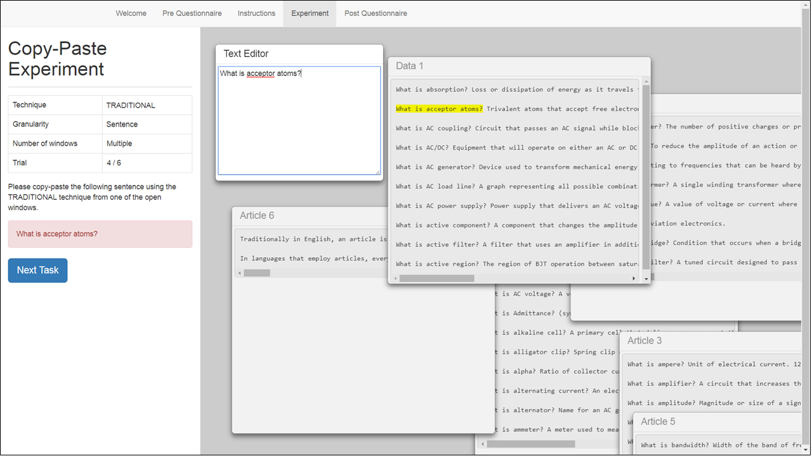

Dear participant , please read the instructions before the experiment.
This experiment aims to compare two methods of copying and pasting text to determine which method is more efficient and preferable. The 2 methods in question are:
A) AutoComPaste, a technique that allows the user to type in the text they wish to copy and paste
B) The traditional method of using CTRL-C and CTRL-V to copy and paste text
The first screen shown upon starting the experiment should be similar to that in Figure 1 below, excluding the green boxes and arrows.
Please take note of the information provided in the green boxes.
You will first be tasked to use AutoComPaste to copy the selected text into the text editor.
To do so, click the text editor and start typing the text to copy. The text will appear in a dropdown box.
To choose the text that you wish to copy, either click the text or press enter to paste the text highlighted in blue in the dropdown box into the text editor.
Please refer to Figure 2 below.
The result should look similar to that in Figure 3 below.
Once done, click the Next Task blue button and continue with the following tasks.
You will also be required to use the traditional method of copying and pasting text by using CTRL-C and CTRL-V.
The screen should look like that in Figure 4.
Continue by using CTRL-C and CTRL-V to copy and paste the required text into the text editor.
Please refer to Figure 5 below.
The end result should like the screen given in Figure 6.
Click the Next Task blue button to proceed with the next few tasks.
Once all the tasks are completed, please continue to fill up the post-experiment questionnaire.